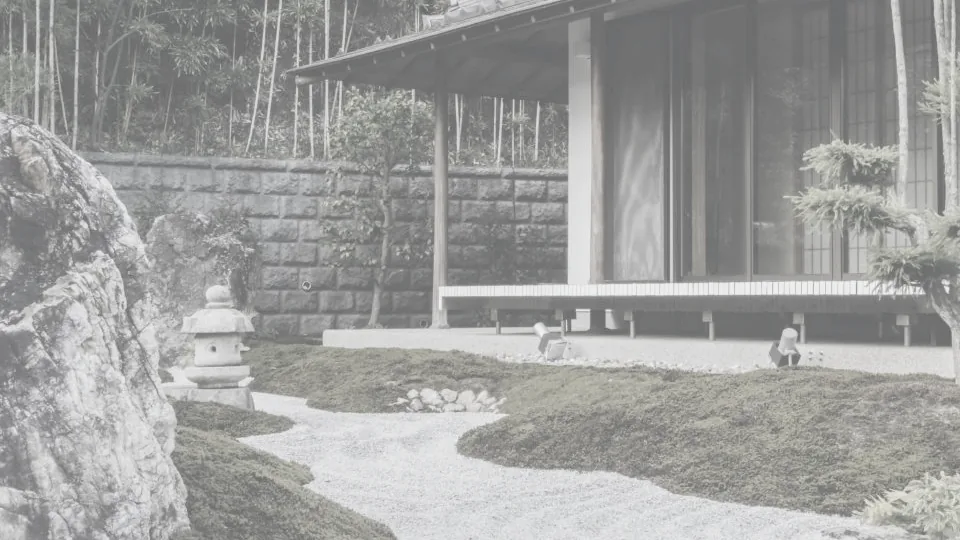

02一棹について
足さないことを、
毎日ていねいに。
01一棹について
一棹（ひとさお）は、羊羹だけを商う小さな店です。
季節が変わるたびに、そのとき一番よい素材をひとつだけ選び、銅鍋で四時間かけて練り上げます。流し缶で三日寝かせ、表面に薄く砂糖の膜が張ったころ、ようやく切り分けます。
味の種類を増やさないのは、ひとつの味に手を尽くすため。贈る方にも、迷わず選んでいただけるように。
- 扱う味
- 1種 / 季節
- 練る時間
- 4時間
- 寝かせる
- 3日
- 切り分け
- 12切れ / 棹

04作り手の覚え書き
切り口は、
嘘をつかない。
羊羹は、切ったときにすべてが見えるお菓子です。気泡がないか、豆が沈みすぎていないか、角が立っているか。練りの具合も、寝かせた日数も、断面にそのまま出てしまいます。
ですから毎朝、一棹目の端を十五ミリ切り落とし、定規をあてて確かめます。寸法が合っていて、切り口が静かであれば、その日の棹はお出しできます。
派手なところのないお菓子ですが、黙って差し出せる贈りものとして、長く選んでいただけたらと思います。
二代目 〇〇 澄江
05お包み
白い紙と、
一本の紐で。
贈りものには、楮（こうぞ）の白い和紙で包み、麻の紐を一本だけ掛けます。のし紙・掛け紙のご用意もございます。
- 簡易包装無料手提げ紙袋をお付けします
- 和紙包み・麻紐無料贈りもの用の標準のお包み
- のし紙・掛け紙無料内のし・外のし、表書きを承ります
- 二棹箱+300 円異なる季節の二棹も詰め合わせできます
- 桐箱+800 円一棹用。改まった贈りものに
07お店
路地の奥、
白い暖簾の店。
- 店名
- 羊羹 一棹（ひとさお）
- 所在地
- 〒605-0000 京都府京都市東山区〇〇町 0-0
- 営業
- 10:00 — 17:00（売り切れ次第終了）
- 定休日
- 水曜・木曜
- 電話
- 000-000-0000
- 交通
- 市バス「〇〇」停留所より徒歩 4 分
—地図
※ 架空の店舗のため、地図はエリアの目安です。